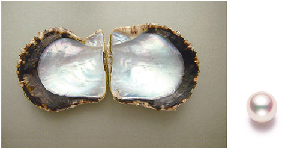
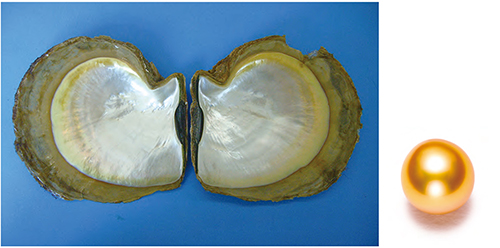

真珠の知識・メンテナンス 真珠の種類や品質評価項目について解説
真珠の種類
| アコヤ真珠 | 
アコヤガイから産出される真珠。生産されるサイズは主に2mm から11mm。生産の大半を占めるのは日本であり、他国では僅かではありますが中国、ベトナム、韓国においても生産が行われています。 日本で生産されている真珠のほとんどはこのアコヤ真珠であり、主要生産県は長崎県、愛媛県、三重県。色はおおまかに分けるとホワイト、ピンク、グリー ン、ロゼ、クリーム、イエロー、ゴールド、ブルーなどが産出され、形はラウンド、セミラウンド、セミバロック、バロックなど様々な形が採れます。 |
|---|
| クロチョウ真珠 | 
クロチョウガイから産出される真珠。生産されるサイズは主に7mm から16mm です。生産の大半は仏領ポリネシア（タヒチ）で占められ、クック諸島、ニューカレドニア、日本では沖縄県の石垣島や西表島でも生産が行われております。 色はブラック系、ブルー系、グリーン系、レッド系、ブラウン系、イエロー系、ホワイト系が産出され、形はラウンド、オーバル、ボタン、ドロップ、サークル、バロックなどバリエーション豊かな形の珠が採れます。 |
|---|
| シロチョウ真珠 | 
シロチョウガイから産出される真珠。生産されるサイズは主に8mm から18mm。主要生産国はオーストラリア、インドネシア、フィリピンにて、この他にも マレーシア、ミャンマー、タイでも生産が行われ、日本では鹿児島県奄美大島、沖縄県にて生産されています。色はホワイト系、シルバー系、ブルー系、ゴールド系、イエロー系、クリーム系などが産出され、形はクロチョウ真珠と同様にラウンド、オーバル、ボタン、ドロップ、サークル、バロックなどバリエーション 豊かな形の珠が採れます。シロチョウ真珠は生産国によって特徴が異なり、オーストラリア産はサイズが全体的に最も大きく、色ではホワイト系やシルバー系が中心に採れます。インドネシアやフィリピン産はオーストラリア産に比べサイズは小ぶりですが、ゴールドやイエローの色の産出比率が高いのが特徴です。以上 の様にシロチョウ真珠は産地の海の環境によって特徴的な珠が産出されます。 |
|---|